15°
15°


澳大利亚独一无二的动物种群也是吸引游客们前来观光的原因之一。这里拥有超过 378 种哺乳类动物、828 种鸟类、4,000 种鱼类、300 种蜥蜴、140 种蛇类、2 种鳄鱼以及约 50 种海洋哺乳动物。其中超过 80%的哺乳动物、爬行动物和蛙类为澳大利亚所独有。最著名的一些动物包括袋鼠、考拉、针鼹鼠、澳大利亚野狗、鸭嘴兽、沙袋鼠和袋熊。
在主要城市和乡村地区的世界级动物园和野生动物园里都能看到这些动物，其中包括悉尼（Sydney）的塔朗加动物园（Taronga Zoo）、道格拉斯港（Port Douglas）的雨林栖息地（Rainforest Habitat）、维多利亚（Victoria）的希斯维尔野生动物保护区（Healesville Sanctuary）、南澳大利亚（South Australia）的克里兰野生动物园（Cleland Wildlife Park）和昆士兰（Queensland）的澳大利亚动物园（Australia Zoo）等。
有袋动物
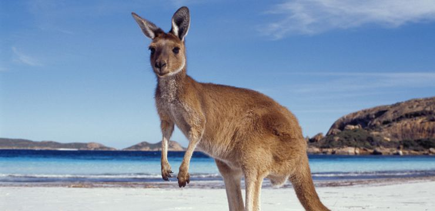澳大利亚的有袋动物可以说是最具代表性的，其中袋鼠和考拉最为大家所熟悉和喜欢。其实，这里拥有超过 140 种有袋动物。光是袋鼠和沙袋鼠，澳大利亚就有 55 种。那袋鼠和沙袋鼠的区别是什么呢？主要在于体型 — 袋鼠和沙袋鼠在体型和体重上差别极大，从半公斤到 90 公斤不等，而沙袋鼠体型一般比较小。
据估计，澳大利亚的袋鼠数量在三千万到六千万之间。 你可以在澳大利亚的很多地方看到它们，比如在大部分乡村地区的野外；在大洋路（Great Ocean Road）上的安吉尔西（Anglesea）以及格兰平山脉（Grampians）里；或在袋鼠岛（Kangaroo Island）上和弗林德斯山脉（Flinders Ranges）里 。如果你想近距离观察袋鼠，那就前往纳玛吉国家公园（Namadgi National Park）、库斯伍兹库国家公园（Kosciuszko National Park）、培布利海滩（Pebbly Beach）或是玛莉亚岛（Maria Island）。在内陆地区，你还能经常看到它们跳过马路的身影。
接着说说沙袋鼠，它们在澳大利亚各地分布也很广泛，尤其是在较为偏远、岩石较多和地形崎岖的地区。你可以在弗林德斯山脉、菲欣纳国家公园（Freycinet National Park）以及纳玛吉和库斯伍兹库国家公园看见它们。
澳大利亚另一个明星动物就是考拉了！在澳大利亚气候温和的东海岸到处都可以看到它们。考拉数量较多的地方包括铁宾比拉自然保护区（Tidbinbilla Nature Reserve）、史蒂芬斯港港（Port Stephens），以及龙柏考拉保护区（Lone Pine Koala Sanctuary）。如果你想看野生考拉，那就去菲利普岛（Phillip Island）和扬切普国家公园（Yanchep National Park）吧！
在澳大利亚，你还会看到另一种动物 – 袋熊。它是一种体型粗壮且会挖洞的动物，体重最高可达 36 公斤。同样，你也很难在野外看到袋熊，一些最佳观看地点包括蓝山国家公园（Blue Mountains National Park）、哥斯高国家公园（Kosciuszko National Park）、威尔逊岬（Wilsons Promontory）、摇篮山-圣克莱尔湖国家公园（Cradle Mountain-Lake St Clair National Park）以及南澳大利亚的一些国家公园。
哺乳动物
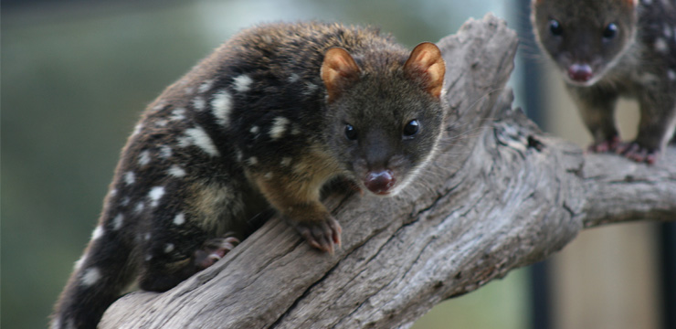澳大利亚没有大型食肉动物，澳大利亚野狗（又称野狗）就是这里最大型的食肉性哺乳动物了。其它独特的食肉动物包括袋食蚁兽、袋鼬和塔斯马尼亚袋獾，但是这些动物的体型都不超过一只普通家猫的大小。
除了塔斯马尼亚以外，澳大利亚野狗在澳大利亚到处都有。观看这牠们的最佳地点是在昆士兰的弗雷泽岛（Fraser Island）、西澳大利亚（Western Australia）的金伯利（Kimberly）以及北领地（Northern Territory）和南澳大利亚的沙漠。而袋食蚁兽是西澳大利亚独有的动物。不用多说，塔斯马尼亚袋獾当然只有在塔斯马尼亚的野外才能看到。哦对了，还有野生动物园！
濒危的袋鼬只栖居在澳大利亚东南部和塔斯马尼亚的雨林以及昆士兰北部的一小部分区域，如果你运气好，也许会和它们不期而遇。属于袋狸科一员的兔耳袋狸，则可以在西澳大利亚的弗朗西斯派伦国家公园（Francois Peron National Park）中找到它们的身影。
单孔类动物
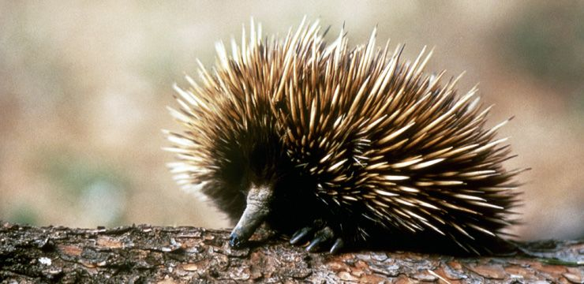另一个澳大利亚独有的物种就是单孔类动物或产卵哺乳动物，其中最独特的单孔类动物就是鸭嘴兽了。这是一种在河流栖息的动物，它的嘴像鸭嘴，拥有一身防水的皮毛和有蹼的脚。鸭嘴兽生活在自己在河岸中所挖的洞穴中，它们非常害羞而且很难看到，观看它们的最佳机会就是在澳大利亚东海岸地区的小溪和宁静的河流中。你可以尝试在铁宾比拉自然保护区（Tidbinbilla Nature Reserve）、大奥特韦国家公园（Great Otway National Park）里的伊丽莎白湖（Lake Elizabeth）、摇篮山-圣克莱尔湖国家公园（Cradle Mountain-Lake St Clair National Park）以及新南威尔士北部和昆士兰寻找一下它们的身影。
针鼹鼠是另一种单孔类动物，它拥有长且具粘性的舌头以及像刺猬或豪猪一样的带刺皮毛 ，所以千万别想抓它！袋鼠岛（Kangaroo Island）则是在野外观看针鼹鼠的最佳地点之一。
鸟类
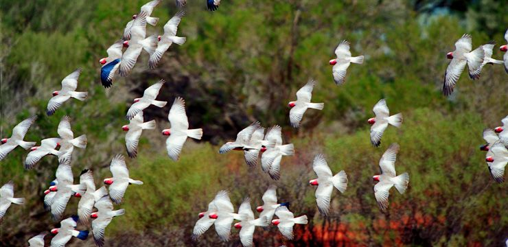澳大利亚共有 828 种鸟类，其中一半是澳大利亚独有的。这里既有体型小巧的蜜鸟，也有体形庞大、不会飞的鸸鹋，它们站立起来有将近两米高！在野外观看鸸鹋的最佳机会是在草地、硬叶森林和草原林地。
大量的水鸟、海鸟和其他鸟类栖息在开阔的林地和森林里，其中包括食火鸟、黑天鹅、神仙企鹅、笑翠鸟、琴鸟和澳大利亚喜鹊。而在袋鼠岛和菲利普岛（Philip Island）上，还能看到可爱的企鹅们。
另外，你可以在沃宁山国家公园（Mt Warning National Park）和岗得瓦纳（Gondwanan）雨林中看到阿尔伯特琴鸟。而在丹顿农区（Dandenong Ranges）和国王湖国家公园（Kinglake National Parks）以及皇家国家公园（Royal National Park）和伊拉瓦拉（Illawarra）地区，则能目睹更常见的较大的琴鸟。在铁宾比拉自然保护区、塔山狩猎保护区（Tower Hill Game Reserve）以及澳大利亚东海岸的许多国家公园也是观看琴鸟的好地方。
笑翠鸟以其在早晚时分发出如人笑声般的叫声而闻名，此种鸟类在澳大利亚分布广泛，你很可能在乡村或市郊看见它们（或听到它们的叫声）。布鲁姆观鸟台（Broome Bird Observatory）和卡卡杜国家公园（Kakadu National Park）是观赏各种湿地鸟和候鸟的绝佳地点。
澳大利亚还拥有 55 种鹦鹉，其种类如同其颜色一样丰富多彩，包括各种令人惊叹的凤头鹦鹉、玫瑰鹦鹉、吸蜜鹦鹉、长尾小鹦鹉和虎皮鹦鹉。你经常可以在乡村和城市地区看到它们。
爬行动物
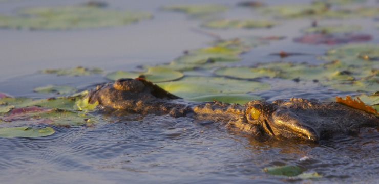澳大利亚拥有比任何大陆都多的毒蛇种类，实际上，在世界上最致命的 25 种毒蛇中，澳大利亚就有 21 种。此外，这里还有令人震撼的巨蟒和树蛇。
澳大利亚的鳄鱼同样出名，包括淡水鳄和咸水鳄。金伯利国家公园和卡卡杜国家公园的鳄鱼自然栖息地都是观看鳄鱼的绝佳地点。
澳大利亚还有五种濒危海龟，它们会按季节在特定的海滩筑巢和产卵，同时还有八种淡水龟。宁格鲁礁（Ningaloo Reef）和布鲁姆（Broome）的生态海滩（Eco Beach）都是观看海龟的理想地点。
这里还有各种令人惊叹的蜥蜴和巨蜥，包括神奇的伞蜥和松狮蜥。金伯利拥有 178 种爬行动物，其中比较著名的爬行动物包括皱颈蜥蜴和常见的“塔塔”蜥蜴。你还可以在沙漠环境中看到澳大利亚棘蜥，比如鲨鱼湾（Shark Bay）、加拿芬（Carnarvon）和埃克斯茅斯（Exmouth）。在澳大利亚中部和弗林德斯山脉（Flinders Ranges）也能看到各种爬行动物，包括松狮蜥、眼斑巨蜥和蓝舌蜥蜴。
海洋动物
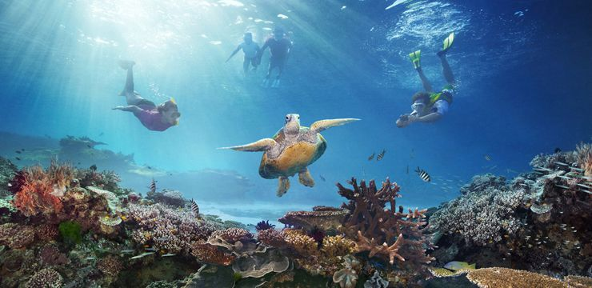澳大利亚的海洋生物也相当丰富。全世界 22,000 种鱼类中的大约 4,000 种和全世界 58 种海草中的 30 种都生长在这里。同时世界最大的珊瑚礁系统——大堡礁（Great Barrier Reef）也在澳大利亚，这里约有 1,700 种不同的珊瑚，另外还有包括美丽的小丑鱼在内种类繁多、五彩斑斓的鱼类 。
澳大利亚还有较大型的海洋物种，包括有迁徙习性且性情温和的鲸鲨、座头鲸、露脊鲸和虎鲸、大儒艮、各种海豚和鲨鱼。五月至十一月份，你可在东部和西部海岸线看到各种鲸鱼。而宁格鲁礁则是世界上观看鲸鲨的最可靠地点，许多旅行社都组织旅游团来这里与这些温柔的巨兽共同遨游大海。袋鼠岛则是在野外观看澳大利亚海狗的最佳地点之一。
澳大利亚独一无二的动物种群也是吸引游客们前来观光的原因之一。这里拥有超过 378 种哺乳类动物、828 种鸟类、4,000 种鱼类、300 种蜥蜴、140 种蛇类、2 种鳄鱼以及约 50 种海洋哺乳动物。其中超过 80%的哺乳动物、爬行动物和蛙类为澳大利亚所独有。最著名的一些动物包括袋鼠、考拉、针鼹鼠、澳大利亚野狗、鸭嘴兽、沙袋鼠和袋熊。
在主要城市和乡村地区的世界级动物园和野生动物园里都能看到这些动物，其中包括悉尼（Sydney）的塔朗加动物园（Taronga Zoo）、道格拉斯港（Port Douglas）的雨林栖息地（Rainforest Habitat）、维多利亚（Victoria）的希斯维尔野生动物保护区（Healesville Sanctuary）、南澳大利亚（South Australia）的克里兰野生动物园（Cleland Wildlife Park）和昆士兰（Queensland）的澳大利亚动物园（Australia Zoo）等。
森林
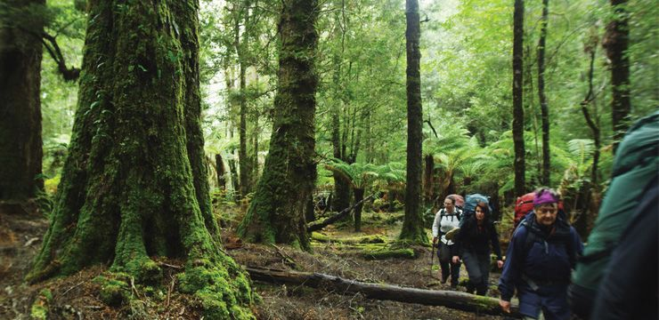你知道澳大利亚最高的树在哪里吗？答案就是西澳大利亚（Western Australia）西南部的巨人谷（Valley of the Giants）！在此你可以发现树龄高达 500 年的巨大澳大利亚桉树、卡里树和大量红柳桉。如果你有充足的时间，不妨驾车体验长达1,000 公里的比布蒙步道（Bibbulmun Track）[www.bibbulmuntrack.org.au] ，它穿越了遍布红柳桉、美叶桉、鞣桉、卡里树和丁戈树的大片森林以及国际著名的壮观湿地。
而在塔斯马尼亚荒原（Tasmanian Wilderness）的温带雨林里，你能一睹地球上最古老的一些树种，比如罕见的泪柏（Huon Pine）。此外，澳大利亚还有雄伟的瓦勒迈松（Wollemi Pine），这可是两亿年前的地貌遗迹！当时澳大利亚、新西兰（New Zealand）和南极（Antarctica）连在一起，形成岗得瓦纳（Gondwana）超级大陆。人们一直认为该树种已灭绝了数百万年，直到 1994 年由一位健行者重新发现。若来到大蓝山地区（Greater Blue Mountains），你能看到约100棵树生长在野外幽深的雨林峡谷中。
桉树
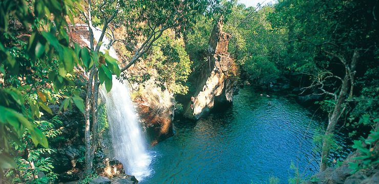桉树算得上是最容易让人联想到澳大利亚的树种了，就连考拉也是以某些种类的桉树为食。你既可以在亚高山地区、湿润的海岸森林中看到它，也可以在温带林地和干燥的内陆地区寻觅到它的踪迹。其中，大蓝山地区拥有地球上最丰富的桉树种类。实际上，大蓝山的名字就是源于桉树油蒸发到空气中形成的蓝色微光。而在澳大利亚阿尔卑斯山（Australian Alps），引人注目的银色和红色疏花桉树在白雪覆盖的大地上异常耀眼。另外，南澳大利亚（South Australia）弗林德斯山脉（Flinders Ranges）古老的河边，还有赤桉树生长在干燥的小河床中。
雨林
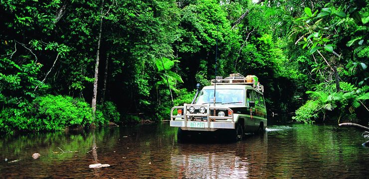澳大利亚有 13 种不同类型的独特雨林，且横跨整个国家，覆盖各种气候类型。北部昆士兰（Queensland）的黛恩树雨林（Daintree Rainforest）是地球上最古老的热带雨林，可追溯到 1.35 亿年以前；昆士兰东南部和新南威尔士（New South Wales）北部的岗得瓦纳雨林（Gondwana Rainforests）是世界上面积最大的亚热带雨林以及凉爽的温带雨林；西澳大利亚金伯利（Kimberley）地区有多处干性雨林；卡卡杜国家公园（Kakadu National Park）有季风雨林；而维多利亚的奥特威山脉（Otway Ranges），则有长满蕨类植物的溪谷。
湿地
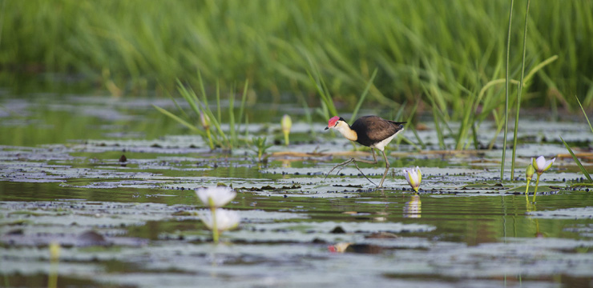澳大利亚全国现共有 65 个拉姆萨尔湿地，面积共约 800 万公顷。卡卡杜国家公园、克拉金固隆国家公园（Croajingolong National Park）和纳吉自然保护区（Nadgee Nature Reserve）里的湿地吸引了大量候鸟飞来。也许你不知道，澳大利亚是拉姆萨尔国际重要湿地公约（Ramsar Convention on Wetlands of International Importance）的首批签署国之一，北领地（Northern Territory）的库伯格半岛（Cobourg Peninsula）于 1974 年宣布成为世界上首个拉姆萨尔湿地。
野花
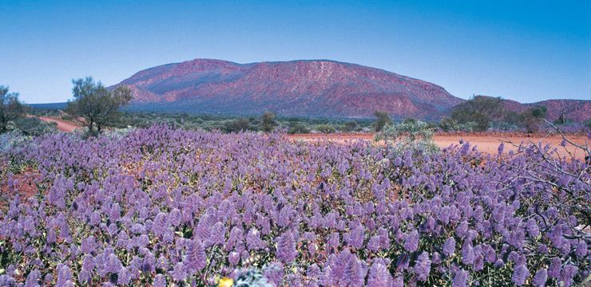各个季节，包括常开不败的雏菊在内的各种野花将澳大利亚干旱的草原地区装点得五彩缤纷。从六月到九月，整个西澳大利亚有 12,000 多种野花盛开。从八月下旬到十月中旬，南澳大利亚袋鼠岛（Kangaroo Island）有 100 多种野花争相开放，而且很多野花种类为袋鼠岛所独有。而在澳大利亚阿尔卑斯山，高山草甸的积雪融化后，黄色的金槌花、粉色的毛扳花和银白色雪雏菊会大片绽放。
澳大利亚独有的植物还包括山龙眼（红千层）、银桦和蒂罗花（皇后花）。值得一提的是，西澳大利亚西南部现已发现的约 80% 的植物以及几乎所有山龙眼科植物在世界上绝无仅有。而维多利亚大洋路（Great Ocean Road）的荒原是澳大利亚兰花盛开最多的地点之一。
野花在澳大利亚是受保护的植物，所以欣赏就好，不要随意乱摘哦！